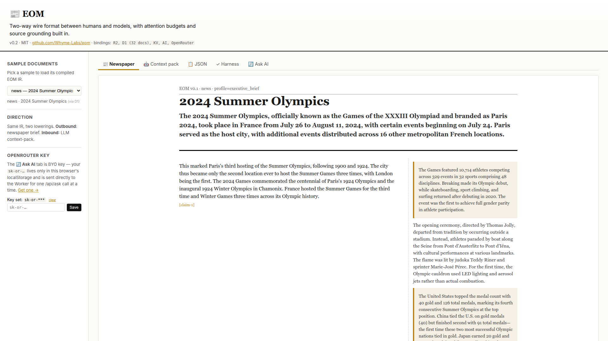
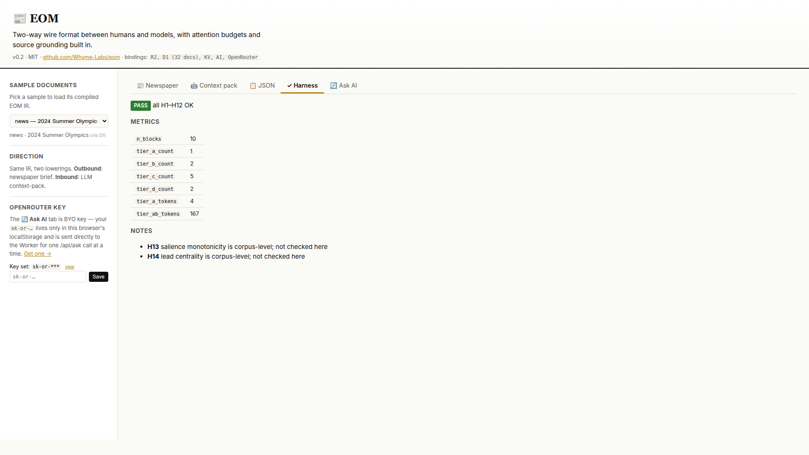

<template id="beat-2-outbound-template">
  <div
    data-composition-id="beat-2-outbound"
    data-width="1920"
    data-height="1080"
    data-start="0"
    data-duration="35"
  >
    <style>
      [data-composition-id="beat-2-outbound"] {
        position: relative;
        width: 1920px;
        height: 1080px;
        background: #fafaf7;
        overflow: hidden;
        font-family:
          -apple-system, BlinkMacSystemFont, "Segoe UI", Inter, sans-serif;
        color: #111111;
      }

      /* --- Layer 1: Newspaper still (full frame, Ken Burns) --- */
      [data-composition-id="beat-2-outbound"] .news-wrap {
        position: absolute;
        inset: 0;
        width: 1920px;
        height: 1080px;
        overflow: hidden;
        z-index: 1;
      }
      [data-composition-id="beat-2-outbound"] .news {
        width: 1920px;
        height: 1080px;
        display: block;
        transform-origin: 60% 50%;
      }

      /* --- Layer 2: Source-span tooltip overlay --- */
      [data-composition-id="beat-2-outbound"] .src-span {
        position: absolute;
        top: 600px;
        left: 780px;
        width: 620px;
        z-index: 5;
        pointer-events: none;
      }
      [data-composition-id="beat-2-outbound"] .src-span-underline {
        height: 2px;
        width: 360px;
        background: #b8860b;
        margin-bottom: 14px;
      }
      [data-composition-id="beat-2-outbound"] .src-tooltip {
        background: #ffffff;
        border: 1px solid #e0ddd5;
        padding: 18px 22px 20px 22px;
        max-width: 580px;
      }
      [data-composition-id="beat-2-outbound"] .src-marker {
        font-family: ui-monospace, "SF Mono", Menlo, monospace;
        font-size: 14px;
        color: #b8860b;
        letter-spacing: 0.02em;
        margin-bottom: 8px;
        display: block;
      }
      [data-composition-id="beat-2-outbound"] .src-quote {
        font-family: Georgia, "Times New Roman", serif;
        font-style: italic;
        font-size: 20px;
        line-height: 1.45;
        color: #111111;
      }

      /* --- Layer 3: Harness panel (right ~70%) --- */
      [data-composition-id="beat-2-outbound"] .harness-wrap {
        position: absolute;
        top: 0;
        left: 576px; /* right 70% of 1920 = 1344px wide */
        width: 1344px;
        height: 1080px;
        overflow: hidden;
        z-index: 10;
        background: #fafaf7;
        border-left: 1px solid #e0ddd5;
      }
      [data-composition-id="beat-2-outbound"] .harness {
        width: 1920px;
        height: 1080px;
        display: block;
        /* Shift left so the right ~70% of the source image is visible */
        margin-left: -576px;
      }
    </style>

    <!-- Layer 1: Newspaper still with Ken Burns -->
    <div class="news-wrap">
      
    </div>

    <!-- Layer 2: Source-span hover overlay -->
    <div class="src-span">
      <div class="src-span-underline"></div>
      <div class="src-tooltip">
        <span class="src-marker">[src:claim-2]</span>
        <div class="src-quote">
          "The 2024 Summer Olympics, branded as Paris 2024, were an
          international multi-sport event held in Paris, France."
        </div>
      </div>
    </div>

    <!-- Layer 3: Harness panel (right ~70% of 03-harness.png) -->
    <div class="harness-wrap">
      
    </div>

    <script src="https://cdn.jsdelivr.net/npm/gsap@3.14.2/dist/gsap.min.js"></script>
    <script>
      window.__timelines = window.__timelines || {};
      const tl = gsap.timeline({ paused: true });

      const scope = '[data-composition-id="beat-2-outbound"]';

      // --- Layer 1: newspaper entrance on parent (.news-wrap), Ken Burns on child (.news) ---
      // Parent: opacity + y entrance (transform on wrapper only — no conflict with child scale)
      tl.fromTo(
        scope + " .news-wrap",
        { opacity: 0, y: 40 },
        { opacity: 1, y: 0, duration: 0.8, ease: "power2.out" },
        0.1,
      );
      // Child: Ken Burns scale 1.0 -> 1.03 across 12s. Single transform tween on .news.
      tl.fromTo(
        scope + " .news",
        { scale: 1.0 },
        { scale: 1.03, duration: 12, ease: "none" },
        0.1,
      );

      // --- Layer 2: source-span tooltip enters at 8s, holds (no exit) ---
      // Hide before entrance.
      tl.set(scope + " .src-span", { opacity: 0, y: 8 }, 0);
      tl.fromTo(
        scope + " .src-span",
        { opacity: 0, y: 8 },
        { opacity: 1, y: 0, duration: 0.7, ease: "power3.out" },
        8.0,
      );
      // Underline grows from left
      tl.fromTo(
        scope + " .src-span-underline",
        { scaleX: 0, transformOrigin: "0% 50%" },
        { scaleX: 1, duration: 0.6, ease: "expo.out" },
        8.1,
      );

      // --- Layer 3: harness panel slides in at 14s, holds ---
      tl.set(scope + " .harness-wrap", { opacity: 0, x: 120 }, 0);
      tl.fromTo(
        scope + " .harness-wrap",
        { opacity: 0, x: 120 },
        { opacity: 1, x: 0, duration: 0.8, ease: "power3.out" },
        14.0,
      );

      window.__timelines["beat-2-outbound"] = tl;
    </script>
  </div>
</template>
